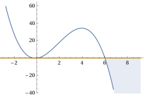

Aufgabe 50 Bestimmen Sie die Lösungsmenge der Ungleichung für x ∈ ℝ: (6 - x)(x² + 0,3x) ≤ 0 ist dann der Fall, wenn a) (6 - x) ≥ 0 → x ≤ 6 und (x² + 0,3x) ≤ 0 (x² + 0,3x) = x(x + 0,3) x(x + 0,3) ≤ 0, ist dann der Fall, wenn x ≤ 0 und x + 0,3 ≥ 0 → x ≥ -0,3 x ≤ 0 ∩ x ≥ -0,3 = -0,3 ≤ x ≤ 0 oder wenn x ≥ 0 und x + 0,3 ≤ 0 → x ≤ -0,3 x(x + 0,3) ≤ 0 trifft zu für x ≥ 0 ∩ x ≤ -0,3 = ∅ (6 - x)(x² + 0,3x) ≤ 0 trifft zu für -0,3 ≤ x ≤ 0 ∪ ∅ = -0,3 ≤ x ≤ 0 (6 - x) ≥ 0 und (x² + 0,3x) ≤ 0 trifft zu für x ≤ 6 ∩ -0,3 ≤ x ≤ 0 = -0,3 ≤ x ≤ 0 D1 = -0,3 ≤ x ≤ 0 b) (6 - x) ≤ 0 → x ≥ 6 und (x² + 0,3x) ≥ 0 (x² + 0,3x) = x(x + 0,3) x(x + 0,3) ≥ 0, ist dann der Fall, wenn x ≥ 0 und x + 0,3 ≥ 0 → x ≥ -0,3 x ≥ 0 ∩ x ≥ -0,3 = x ≥ 0 oder wenn x ≤ 0 und x + 0,3 ≤ 0 → x ≤ -0,3 x ≤ 0 ∩ x ≤ -0,3 = x ≤ -0,3 x(x + 0,3) ≤ 0 trifft zu für x ≥ 0 ∪ x ≤ -0,3 (x² + 0,3x) ≥ 0 trifft zu für x ≥ 0 ∪ x ≤ -0,3 (6 - x) ≥ 0 und (x² + 0,3x) ≥ 0 trifft zu für x ≥ 6 ∩ x ≥ 0 ∪ x ≤ -0,3 = x ≥ 6 D2 = x ≥ 6 L = D1 ∪ D2 L = -0,3 ≤ x ≤ 0 ∪ x ≥ 6 In Worten: Für -0,3 ≤ x ≤ 0 oder x ≥ 6 ist (6 - x)(x² + 0,3x) ≤ 0. Alternativlösung: Nullstellen von (6 - x)(x² + 0,3x) ≤ 0 6 - x = 0|+x x1 = 6 x² + 0,3x = 0 x(x + 0,3) = 0 x2 = 0 x + 0,3 = 0|-0,3 x3 = -0,3 Die Funktionswerte zwischen -0,3 und 0 und ab x = 6 liegen unterhalb der x-Achse, erfüllen also die Bedingung (6 - x)(x² + 0,3x) < 0, die Nullstellen erfüllen die Bedingung = 0. L = -0,3 ≤ x ≤ 0 ∪ x ≥ 6
